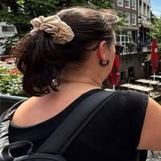

Caroline Tardif
4 avis · Google
★★★★★
Les cercles de chant de Mamselle Ruiz sont des moments de pur plaisir, de détente et de camaraderie. Mamselle est une professeure expérimentée : douce, drôle et très proche de nous. Dès la première séance, on se sent bienvenu, peu importe notre expérience.